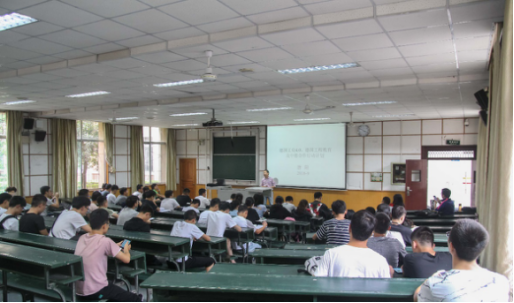
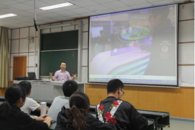
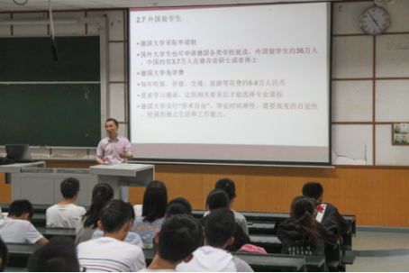
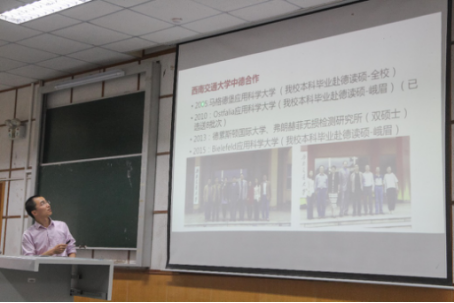
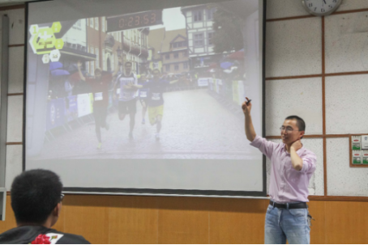
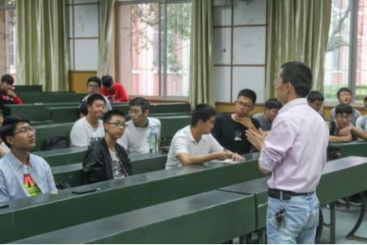

作者：赵杨
时间：2018-09-25 20:28:47 | 来源：本站
2018年9月20日下午，由西南交大人事处、教务处、科发院、工会峨眉相应单位主办， 西南交大机械工程学院、四川（乐山）中德科技促进中心承办的迎新“中德合作讲座”在校区内顺利举行。
此次中德合作讲座面向校区全体师生，讲座邀请到交控系唐阳副教授为主讲人， 以“德国工业4.0、德国工程教育及中德合作行动计划”为主题进行讲解。
在德国工业4.0方面，唐教授首先讲述了“德国工业4.0”这一概念提出的背景，并结合自己参加2017汉诺 威工业博览会的经历，介绍德国工业4.0发展战略后所取得的成就。之后，唐教授还讲述“中国制造2025” 提出的相关背景及国家通过“三步走”实现制造强国的战略规划。
在德国工程教育方面，唐教授首先对比了中德两国的教育体系，并着重介绍了德国的高等学校（包括综合性大学、 工业 大学、 应用科学大学）的办学定位、培养目标、培养模式、师资力量以及外国留学生如何申请攻读德国大学的硕士或博士的情况。
在中德合作行动计划方面，唐教授首先介绍了国家层面、四川省层面中国和德国在工业、科学、教育、 文化领域开展合作情况。此后，唐教授介绍了西南交通大学与德国大学长期合作的情况，并着重介绍了 学校与Ostfalia应用科学大学、Bielefeld应用科学大学良好的合作关系（截止目前已选送八批峨眉校区 毕业学生去Ostfalia应用科学大学攻读硕士）。最后，唐教授介绍了为深入推动校区的中德合作， 成立机电工程研究所、四川（乐山）中德科技促进中心交大工作组的情况。通过持续搭建平台，将校区学生 批量培养成具有国际化视野的工程人才。
在报告的尾声，唐教授以图片的方式与在场的师生分享了自己2017年去德国的访学期间的学习、 饮食、住宿、交通等方面的经历。并介绍了峨眉校区毕业生在德留学、留德工作的相关情况。
整场讲座持续2个小时，讲座结束后，在场同学就德语学习、赴德留学、培养自己专业技能等方面与唐阳老师进行了 互动交流。最后，在同学们热烈的掌声中，此次讲座圆满结束。
此次讲座的成功举办后，中德科促金秋峨眉校区迎新工作告一段落。下一步，中德科促交大工作组将开展 第3期“德语零基础班”的开班工作，为同学们学习德语，以便将来应聘德企、赴德留学打下坚实基础。